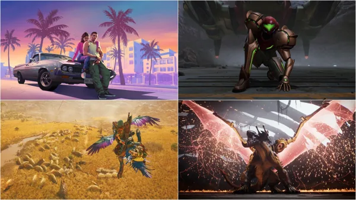

Maior sucesso da história da Capcom, com mais de 25 milhões de unidades vendidas, Monster Hunter World vendeu 1 milhão de cópias nos últimos três meses, mesmo tendo sido lançado há sete anos.
Segundo o IGN Japão, até setembro do ano passado, Monster Hunter World havia vendido 27 milhões de unidades, mas com a atualização no ranking de jogos mais vendidos da empresa até 31 de dezembro de 2024, esse número cresceu para 28,1 milhões de cópias, o que indica mais de um milhão de unidades foram vendidas no último trimestre do ano. Monster Hunter Rise, vendeu 700 mil cópias no mesmo período, em comparação.
Mas não é somente o jogo base que se mostra forte nas vendas. A expansão Iceborne foi comprada por mais de 14,9 milhões de jogadores até o final de 2024.
GTA 6 e mais: os jogos mais aguardados …
A força desses dois jogos é enaltecida pelo iminente lançamento de Monster Hunter Wilds, próxima entrada da franquia, que chega para PlayStation 5, Xbox Series X|S e PC em 28 de fevereiro de 2025. O IGN Brasil já jogou e em nossa preview dissemos: "Monster Hunter Wilds tem tudo para ser um dos melhores jogos do ano e ter uma vida muito longa com atualizações e expansões, assim como MH World e MH Rise. O combate é estarrecedor e emocionante, enquanto a história pode ser bastante interessante ao abordar temas sobre pertencimento e ligações com a Terra."